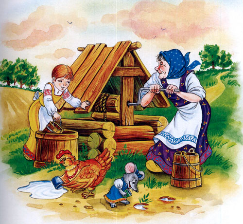
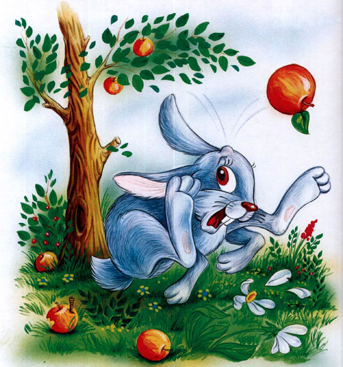
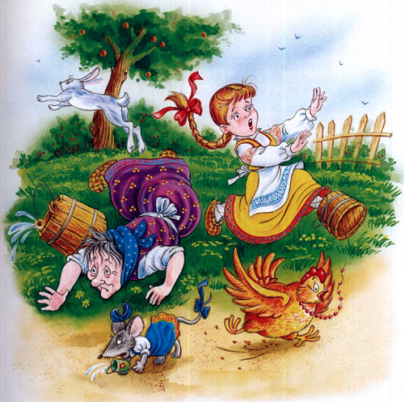
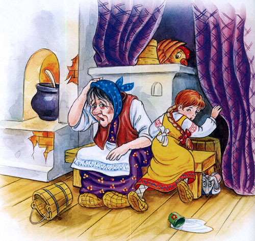

У страха глаза велики

Жили-были бабушка-старушка, внучка-хохотушка, курочка-клохтушка и мышка-норушка.
Каждый день ходили они за водой. У бабушки были ведра большие, у внучки — поменьше, у курочки — с огурчик, у мышки — с наперсточек.
Бабушка брала воду из колодца, внучка — из колоды, курочка — из лужицы, а мышка — из следа от поросячьего копытца.
Назад идут, у бабушки вода трё-ё-х, плё-ё-х! У внучки — трёх! плёх! У курочки — трёх-трёх! плёх-плёх! У мышки — трёх-трёх-трёх! плёх-плёх-плёх!

Вот раз наши водоносы пошли за водой. Воды набрали, идут домой через огород.
А в огороде яблонька росла, и на ней яблоки висели. А под яблонькой зайка сидел. Налетел на яблоньку ветерок, яблоньку качнул, яблочко хлоп — и зайке в лоб!
Прыгнул зайка, да прямо нашим водоносам под ноги.

Испугались они, ведра побросали и домой побежали.

Бабушка на лавку упала, внучка за бабку спряталась, курочка на печку взлетела, а мышка под печку схоронилась.

Бабка охает:
— Ох! Медведище меня чуть не задавил!
Внучка плачет:
— Бабушка, волк-то какой страшный на меня наскочил!
Курочка на печке кудахчет:
— Ко-ко-ко! Лиса ведь ко мне подкралась, чуть не сцапала!
А мышка из-под печки пищит:
— Котище-то какой усатый! Вот страху я натерпелась!
А зайка в лес прибежал, под кустик лег и думает:
«Вот страсти-то! Четыре охотника за мной гнались, и все с собаками; как только меня ноги унесли!»
Верно говорят: «У страха глаза велики: чего нет, и то видят».